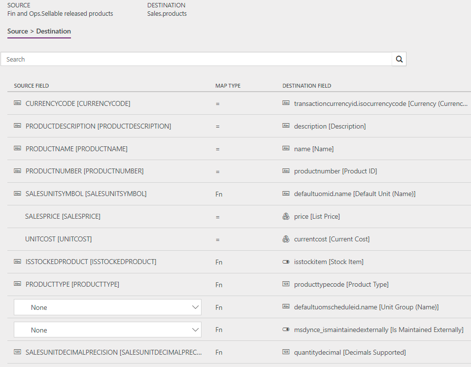

Synchronize products directly from Supply Chain Management to products in Sales
[!include[rename-banner](~/includes/cc-data-platform-banner.md)]Note
Before you can use the Prospect to cash solution, you should be familiar with Integrate data into Microsoft Dataverse for Apps.
This topic discusses the templates and underlying tasks that are used to synchronize products directly from Dynamics 365 Supply Chain Management to Dynamics 365 Sales.
Data flow in Prospect to cash
The Prospect to cash solution uses the Data integration feature to synchronize data across instances of Supply Chain Management and Sales. The Prospect to cash templates that are available with the Data integration feature enable the flow of data about accounts, contacts, products, sales quotations, sales orders, and sales invoices between Supply Chain Management and Sales. The following illustration shows how the data is synchronized between Supply Chain Management and Sales.

Templates and tasks
To access the available templates, open Power Apps Admin Center. Select Projects, and then, in the upper-right corner, select New project to select public templates.
The following template and underlying tasks are used to synchronize products from Supply Chain Management to Sales.
- Name of the template in Data integration: Products (Supply Chain Management to Sales) - Direct
- Name of the task in the Data integration project: Products
No synchronization tasks are required before product synchronization can occur.
Entity set
| Supply Chain Management | Sales |
|---|---|
| Sellable released products | Products |
Entity flow
Products are managed in Supply Chain Management and synchronized to Sales. The Sellable released products data entity in Supply Chain Management exports only products that are sellable. Sellable products are products that have the information that they require in order to be used on a sales order. The same rules apply when a product is validated by using the Validate function on the Released product page.
The product number is used as a key. Therefore, when product variants are synchronized to Sales, each product variant has an individual product ID.
Prospect to cash solution for Sales
In Sales, a new Is Externally Maintained field has been added on products to indicate that a given product is maintained externally. By default, the value is set to Yes during an import to Sales. The following values are available:
- Yes – The product originated from Supply Chain Management and won't be editable in Sales.
- No – The product was entered directly in Sales.
- (Blank) – The product existed in Sales before the Prospect to cash solution was enabled.
The Is Externally Maintained field helps ensure that only quotations and sales orders that have externally maintained products will be synchronized to Supply Chain Management.
Externally maintained products are automatically added to the first valid price list that has the same currency. Price lists are organized alphabetically by name. The product sales price from Supply Chain Management is used as the price on the price list. Therefore, there must be a price list in Sales for every product sales currency in Supply Chain Management. The currency on the released sellable products is set to the accounting currency in the legal entity that the product is exported from.
Note
- Product synchronization will not succeed unless there is a price list that has a matching currency.
- You can control the used price list with the integration by mapping the pricelevelid.name [Default Price List (Name)] in the Data Integration project. The input has to be in all lowercase letters. For example, the default for a price list in Sales named ‘Standard’ would be: Destination field: pricelevelid.name [Default Price List (Name)] and Map type: [ { "transformType": "Default", "defaultValue": "standard" } ].
Preconditions and mapping setup
Before you run the synchronization for the first time, you must fill the Distinct product table for existing products in Supply Chain Management. Existing products won't be synchronized until this job is completed.
- In Supply Chain Management, use Search to search for Populate distinct product table.
- Select Populate distinct product table to run the job. This job must be run only one time.
Make sure that the required value map for the selling unit of measure (UOM) between Supply Chain Management and Sales exists in the mapping of SalesUnitSymbol to DefaultUnit (Name).
Update the value map for Unit group (defaultuomscheduleid.name) so that it matches Unit groups in Sales.
The default template value is Default unit.
Make sure that the selling UOMs for all products from Supply Chain Management exist in Sales.
Make sure that price lists exist in Sales for every product sales currency in Supply Chain Management.
When products are created in Sales, they can have a status of Draft or Active. The behavior is controlled at Settings > Administration > System settings > Sales in Sales.
Products that have Draft status when they are created must be activated before they can be added to quotations or sales orders.
Template mapping in Data integration
The following illustration shows an example of a template mapping in Data integration.
Note
The mapping shows which field information will be synchronized from Sales to Supply Chain Management.

Related topics
Synchronize accounts directly from Sales to customers in Supply Chain Management
Synchronize contacts directly from Sales to contacts or customers in Supply Chain Management
Synchronization of sales orders directly between Sales and Supply Chain Management
Synchronize sales invoice headers and lines directly from Supply Chain Management to Sales